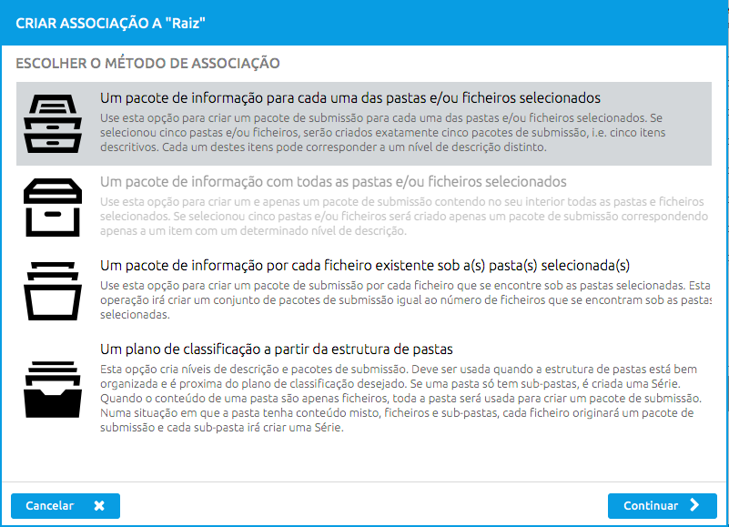
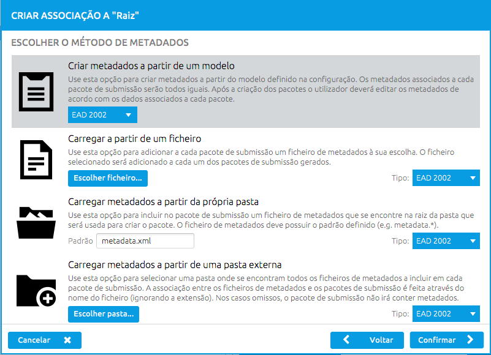

O RODA-in é uma ferramenta que permite que entidades produtoras de informação de arquivo possam preparar pacotes de submissão contendo dados e metadados para serem enviados para o Arquivo Digital a fim de serem ingeridos. Ao Arquivo Digital tipicamente chamamos Repositório Digital ou apenas Repositório.
Os pacotes produzidos por esta ferramenta chamam-se SIPs (do inglês "Submission Information Packages").
Para se criar um conjunto de SIPs, o utilizador deverá seguir um conjunto de passos:
A aplicação é composta por 4 painéis distintos assinalados a cor azul claro:
 Cada um destes painéis é explicado em detalhe de seguida.
Cada um destes painéis é explicado em detalhe de seguida.
Esta área de trabalho da aplicação permite localizar os ficheiros no disco local que se pretendem empacotar. Para começar, o utilizador deverá aceder ao menu "Ficheiro > Adicionar pasta" para adicionar ao projeto de preparação de SIPs um conjunto de ficheiros.
Um ficheiro pode estar num de 3 estados: normal, ignorado ou mapeado:
Depois de criados os pacotes de informação, poderá querer enriquecê-los com metadados ou tratar alguns casos excecionais. Este é um passo opcional, mas oferece algumas funcionalidades importantes que não devem ser negligenciadas, tais como criar e validar metadados, manipular o conteúdo do SIP ou adicionar documentação. Esta operações podem ser realizadas no painel "Inspecionar".
Trata-se da última operação do fluxo de trabalho. Este painel apenas oferece uma opção que é "Criar os SIP(s)" que foram preparados nos painéis anteriores.
O primeiro passo do processo é escolher os ficheiros e pastas do computador a arquivar e adicioná-los ao explorador de ficheiro da aplicação. Esta ação irá apresentar a pasta e o seu conteúdo numa vista de árvore. As pastas e ficheiros são claramente distinguíveis umas das outras (uma vez que são utilizados ícones diferentes) e as pastas podem ser expandidas de modo a inspecionar o seu conteúdo.
Ao arrastar um conjunto de pastas ou ficheiros do painel da esquerda para o painel central irá criar pacotes de informação que poderão posteriormente ser enriquecidos com metadados ou mais ficheiros. Ao realizar esta operação, a ferramenta irá apresentar um conjunto de opções que deverão escolher para obter o resultado desejado.
Também pode clicar no botão "Associar" para iniciar o processo.
O método de associação de dados define as regras que são utilizadas para transformar as pastas e ficheiros em SIPs. Existem atualmente 4 métodos disponíveis, conforme se pode verificar na figura seguinte:

Após a seleção de um método de associação de ficheiros em pacotes, o sistema irá apresentar-lhe várias opções para associação de metadados ao pacote em questão. Estas opções podem ser consultadas na figura que se segue:

Os dados dos pacotes estão divididos em "representações" que podem ser adicionadas ou removidas. Também é possível remover ficheiros e pastas do conteúdo do SIP. Estes ficheiros regressam ao estado normal e passam a estar disponíveis no Explorador de ficheiros para serem incluídos noutro SIP. O sistema de "drag n' drop" da estrutura de pasta de dados permite reorganizar o conteúdo do SIP e mover ficheiros entre representações. Ao clicar no botão mais à direita, o painel altera entre "Dados" e "Documentação".
Documentação pode ser adicionada aos SIPs para complementar a compreensão da informação que se está a arquivar na secção de "Dados". Os ficheiros adicionados à documentação não altera o estado dos ficheiros para "mapeado", de modo a que o produtor possa adicionar o mesmo ficheiro à documentação de 1 ou mais SIPs. Depois de adicionados, os ficheiros podem ser removidos e reorganizados tal como acontece na secção de "Dados".
Quando os SIPs são criados através da opção de modelo de metadados, pode editar os metadados através de um formulário. Para além disso, o conteúdo XML do ficheiro de metadados pode ser apresentado e editado através da interface.
Para além de editar ficheiros de metadados, é possível adicionar e remover ficheiros de metadados. Existem 3 opções disponíveis ao adicionar um novo ficheiro de metadados:
Para evitar conflitos, não é possível adicionar dois ficheiros de metadados com o mesmo esquema.
A ferramenta oferece ainda uma funcionalidade de validação de metadados. Esta funcionalidade encontra-se apenas disponível para ficheiros de metadados criados a partir de modelos de metadados que possuem o esquema especificado na configuração.
O último passo no fluxo de criação de SIP é exportar os SIPs para um formato de saída para serem submetidos para o repositório.
O utilizador pode adaptar o processo de exportação às suas necessidades. A primeira decisão que pode tomar é se pretende exportar todos os SIPs preparados ou apenas os selecionados. Por omissão, os SIPs criados são os selecionados.
O utilizador deverá definir o destino dos SIPs depois de exportados.
É também nessa altura que o formato de exportação deve ser escolhido. De momento, o RODA-in suporta 2 formatos: E-ARK SIP e BagIt.
O plano de classificação pode ser importado a partir de um ficheiro ou criado diretamente na aplicação.
Na primeira opção, o utilizador precisa de importar um ficheiro que foi fornecido pelo responsável pelo Repositório
Para criar um plano de classificação, o primeiro passo é adicionar itens de descrição através do botão "Adicionar" apresentado na zona inferior do painel central. Ao clicar no botão,um novo item de descrição é criado e adicionado por baixo do item de descrição selecionado no painel central ou na raíz se nenhum item estiver selecionado ou se o item selecionado for um SIP.
Para além de poder adicionar itens, existem duas outras ações disponíveis: remover e reorganizar.
Para criar um plano de classificação no RODA-in, o primeiro passo é adicionar items de descrição utilizado o botão Adicionar situado na parte inferior do painel central. Ao carregar nesse botão, um novo item de descrição é criado e adicionado por baixo do item de descrição selecionado ou na raíz se nenhum item estiver selecionado no painel central ou se o item selecionado for um SIP.
Arrastando e largando os itens selecionados por cima de outros itens, o plano de classificação pode ser reorganizado. O comportamento do sistema de Drag'n'drop pode ser descrito da seguinte forma:
Depois do plano de classificação estar completo, pode querer guardá-lo para usar no futuro utilizando a funcionalidade "Exportar" , que se encontra por baixo do menu Plano de Classificação.
Os pacotes de informação podem conter dados e metadados. Os metadados são incluídos em cada pacote através de regras de associação. Estas regras de associação definem a forma com os metadados descritivos selecionados do sistema de ficheiro são incluídos dentro de cada SIP.
Uma vez que editar os ficheiros XML é um processo moroso e complexo, foi adicionada uma forma de configurar formulários de recolha de dados. Estes formulários são construídos à custa de ficheiros de configuração que estão localizados na pasta "roda-in" (em Documentos se estiver a usar Windows ou na raiz do utilizador se usar Linux), debaixo da pasta "templates".
Através do motor de templating Handlebars, um utilizador avançado pode criar formulários de recolha de dados. Para além de uma etiqueta simples, (por exemplo {{pessoa}}), é possível adicionar opções que vão modificar a forma como cada campo é criado e guardado no XML resultante. Para mais informações consulte a página http://rodain.roda-community.org.
As opções disponíveis para alterar a criação dos campos para cada etiqueta são:
Exemplo de uma possível utilização das etiquetas para criar um campo no formulário:
{{title order=1 type="text" label="Título do campo" mandatory=true auto-generate="title"}}